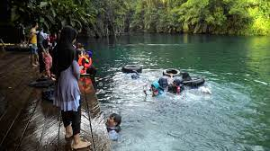

Galeri Labuan Cermin
Selamat datang di Galeri Labuan Cermin, tempat di mana keindahan alam yang menakjubkan terpampang nyata. Nikmati pemandangan danau dua rasa yang unik, air jernih yang memukau, dan keajaiban alam yang tak terlupakan.
